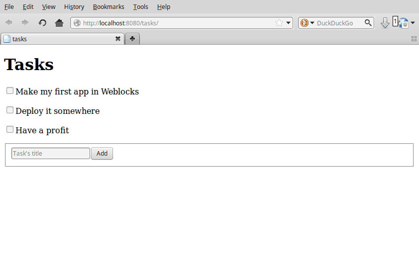
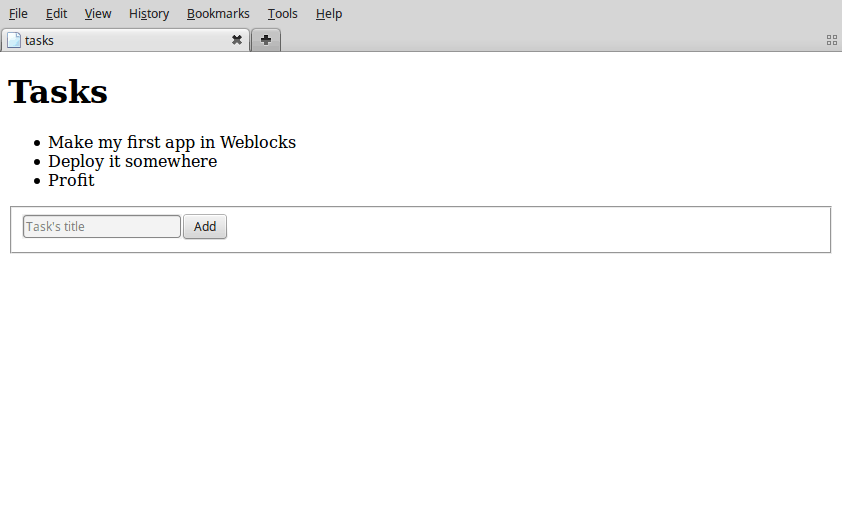

Warning
This version of Weblocks is not in the Quicklisp yet. To
install it you need to clone the repository somewhere where
ASDF will find it, for example, to ~/common-lisp/ directory.
Load weblocks and create a package for a sandbox:
CL-USER> (ql:quickload '(:weblocks :find-port))
CL-USER> (defpackage todo
(:use #:cl
#:weblocks/html)
(:import-from #:weblocks/app
#:defapp))
#<PACKAGE "TODO">
CL-USER> (in-package todo)
#<PACKAGE "TODO">
Now, create an application:
TODO> (defapp tasks)
TODO> (weblocks/debug:on)
TODO> (defvar *port* (find-port:find-port))
TODO> (weblocks/server:start :port *port*)
Open http://localhost:8080/tasks/ in your browser and you’ll see a text like that:
No weblocks/session:init method defined.
Please define a method weblocks.session:init to initialize a session.
It could be something simple, like this one:
(defmethod weblocks/session:init ((app tasks))
"Hello world!")
Read more in documentaion.
It means that you didn’t write any code for your application. Let’s do it now and make an application which outputs a list of tasks.
In the end, we’ll build the mandatory TODO-list app:
TODO> (defmethod weblocks/session:init ((app tasks))
(let ((tasks '("Make my first app in Weblocks"
"Deploy it somewhere"
"Have a profit")))
(lambda ()
(with-html
(:h1 "Tasks")
(:ul :class "tasks"
(loop for task in tasks
do (with-html
(:li task))))))))
This code defined a list of tasks. For simplicity, they are defined as a
list in a memory. Then it renders these tasks as HTML ul block.
Restart the application:
TODO> (weblocks/debug:reset-latest-session)
Right now it should look like this:
Now, we’ll add some ability to interact with a list – to add some tasks into it, like so:
Import a new module, weblocks-ui to help in creating forms and other UI elements:
TODO> (ql:quickload "weblocks-ui")
TODO> (use-package :weblocks-ui/form)
Write a new init method in the repl:
TODO> (defmethod weblocks/session:init ((app tasks))
(let ((tasks '("Make my first app in Weblocks"
"Deploy it somewhere"
"Have a profit")))
(flet ((add-task (&key task &allow-other-keys)
(push task tasks)
(weblocks/widget:update
(weblocks/widgets/root:get))))
(lambda ()
(with-html
(:h1 "Tasks")
(:ul :class "tasks"
(loop for task in tasks
do (with-html
(:li task))))
(with-html-form (:POST #'add-task)
(:input :type "text"
:name "task"
:placeholder "Task's title")
(:input :type "submit"
:value "Add")))))))
Pay attention to two new blocks in this code. Now it has the inner function
add-task:
(add-task (&key task &allow-other-keys)
(push task tasks)
(weblocks/widget:update
(weblocks/widgets/root:get)))
It does only two simple things:
This second point is really important because it allows Weblocks to render necessary parts of the page on the server and to inject it into the HTML DOM in the browser. Here it rerenders the whole page, but later you’ll see that the same technic can be used to update smaller pieces, called Widgets.
Another block in our new version of init-user-session is the form:
(with-html-form (:POST #'add-task)
(:input :type "text"
:name "task"
:placeholder "Task's title")
(:input :type "submit"
:value "Add"))
It defines a text field, a submit button and an action to perform on form submit.
Note
This is really amazing!
With Weblocks, you can handle all the business logic server-side, because an action can be any lisp function, even an anonymous lambda, closuring all necessary variables.
Restart the application and reload the page. Test your form now and see in a Webinspector how Weblocks sends requests to the server and receives HTML code with rendered HTML block.
Now we’ll make our application really useful – wekll add code to toggle tasks:
TODO> (defstruct task
(title)
(done))
TODO> (defmethod weblocks/session:init ((app tasks))
(let ((tasks (list (make-task :title "Make my first app in Weblocks" :done t)
(make-task :title "Deploy it somewhere" :done nil)
(make-task :title "Have a profit" :done nil))))
(labels ((redraw ()
(weblocks/widget:update
(weblocks/widgets/root:get)))
(add-task (&rest rest &key task &allow-other-keys)
(log:info "Pushing" task "to" tasks rest)
(push (make-task :title task :done nil) tasks)
(redraw))
(toggle-task (task)
(setf (task-done task)
(if (task-done task)
nil
t))
(redraw))
(render-task (task)
(let ((title (task-title task))
(done (task-done task)))
(with-html
(:p (:input :type "checkbox"
:checked done
:onclick (weblocks/actions:make-js-action
(lambda (&rest rest)
(declare (ignore rest))
(toggle-task task))))
(:span (if done
(with-html (:s title))
title)))))))
(lambda ()
(with-html
(:h1 "Tasks")
(:div :class "tasks"
(loop for task in tasks
do (with-html (render-task task))))
(with-html-form (:POST #'add-task)
(:input :type "text"
:name "task"
:placeholder "Task's title")
(:input :type "submit"
:value "Add")))))))
This code has the following significant changes:
Now we store our tasks as structures to be able to change their state easily:
(defstruct task
(title)
(done))
And now they have the additional attribute done for indication if we’re
done with a task or not.
The next change is a small helper to toggle the done attribute:
(toggle-task (task)
(setf (task-done task)
(if (task-done task)
nil
t))
(redraw))
And finally, we’ve modified our task rendering function by adding a
code to render a checkbox with an anonymous lisp function, attached to
its onclick attribute:
(with-html
(:p (:input :type "checkbox"
:checked done
:onclick (weblocks/actions:make-js-action
(lambda (&rest rest)
(declare (ignore rest))
(toggle-task task))))
(:span (if done
(with-html (:s title))
title))))
The function make-js-action returns a Javascript code, which
calls back a lisp lambda function when evaluated in the browser.
And because toggle-task updates the root widget, Weblocks
returns on this callback a new prerendered HTML with all tasks.
In next tutorial I’ll show how to rerender only a single task on such changes.
As a homework:
{kind=link}